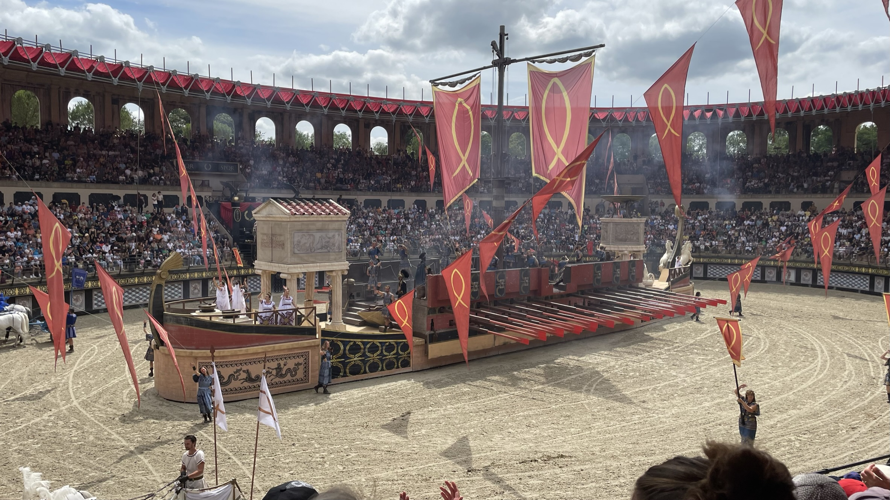

Après plusieurs mois de préparations et d’attente, le jour J est arrivé. Nous terminons les derniers préparatifs en rangeant les valises dans la voiture et nous sommes prêts à partir. Mais avant le grand départ, nous rejoignons ma sœur et mon beau-frère chez ma grand-mère, notre réel point de départ. En partant du même endroit on peut ainsi suivre le même trajet et s’arrêter aux mêmes aires de repos. Une fois tout ce beau monde en voiture, nous partons finalement pour le début de nos premières vacances tous ensemble direction les Pays de la Loire et plus précisément un petit village nommé Saint-Paul-en-Pareds.

Pendant une semaine, nous allons loger dans le gîte « Ça coule de source » , une belle bâtisse avec un intérieur moderne et surtout assez grand pour accueillir toute la petite famille. Les critères de sélection de notre logement étaient en priorité le nombre de chambres mais aussi les activités disponibles sur place et à l’extérieur.

Nous arrivons au gîte en fin d’après-midi et nous sommes accueillis chaleureusement par la propriétaire qui nous fait visiter les lieux et nous explique comment fonctionne l'électroménager et surtout comment utiliser en toute sécurité la piscine intérieure chauffée. La première soirée au gîte a été assez calme, tout le monde étant fatigué du long trajet (environ 6 h/ 6 h 30 de route). Chacun a vaqué à différentes occupations, jouant à un jeu de société, regardant la télé ou en décidant d’aller se coucher. Nous n’avons rien prévu le dimanche, préférant être bien reposés pour le début de semaine qui allait s’annoncer mouvementé.

Quelque chose que je n’ai pas précisé, c’est que nous ne sommes pas totalement parti au complet. Ma famille est composée de quatre « sous-familles » : mes parents, ma petite sœur et moi, ma première grande sœur, mon beau-frère et ma nièce, ma grand-mère et enfin ma deuxième grande sœur, ma belle-sœur et ma filleule. Ces dernières n’ont pas pu venir avec nous au dernier moment et cela à quelque peu affecté le moral des troupes et nous pouvions nous empêcher de remarquer qu’on se plaisait déjà beaucoup dans la maison mais que ce n’était pas pareil sans elles. Le dimanche après-midi, après que ma belle-sœur soit revenue du travail, nous avons reçu un message pour nous prévenir qu’elles avaient fait leurs affaires et qu’elles étaient sur la route. Un peu avant minuit, elles sont arrivées et nous étions enfin au complet.

L’un des buts premiers de ces vacances commence ce lundi. Nous avons choisi le gîte car il se situe près du parc du Puy du Fou, où nous avons pris des billets pour deux jours pour avoir le temps de profiter de toutes les attractions disponibles. Il faisait chaud et le soleil tapait mais nous avons pleinement profité du parc et avons eu l’occasion d’assister à la plupart des spectacles, excepté ceux du soir. Nous avons voyagé dans plusieurs époques grâce aux décors magnifiques et au jeu des comédiens qui étaient époustouflants. Quasiment à l’unanimité, nous avons beaucoup aimé deux des grands spectacles principaux, « Le Signe du Triomphe » et « Les Vikings » . Le spectacle immersif « Les Amoureux de Verdun » nous a également touchés par son réalisme glaçant du quotidien des soldats dans les tranchées pendant la Première Guerre mondiale. Nous gardons un très beau souvenir de notre visite et nous comptons bien y retourner un jour.
Friands de jeux d’enquêtes, d’énigmes et autres casse-têtes, nous avons décidé de nous rendre de la jolie petite ville de Pouzauges, toujours non loin de notre gîte, où l’office de tourisme propose de visiter la ville tout en faisant un petit jeu d’énigmes dans les rues. Notre enquête nous a mené aux alentours de l’église, dans un joli petit parc pour finir par visiter les ruines d’un ancien château médiéval.

Comme le début de semaine a été chargé avec des sorties tous les jours, nous avons décidé de garder la fin de semaine pour nous reposer et profiter de la maison, de son extérieur et de la piscine. Nous nous sommes baladés dans les alentours à pied car les propriétaires nous avaient parlé de moulins non loin du gîte. Nous mangions tous les soirs sur la terrasse entre les sauts dans la piscine et les tournois de ping-pong. Nous sommes repartis le samedi en fin de matinée.